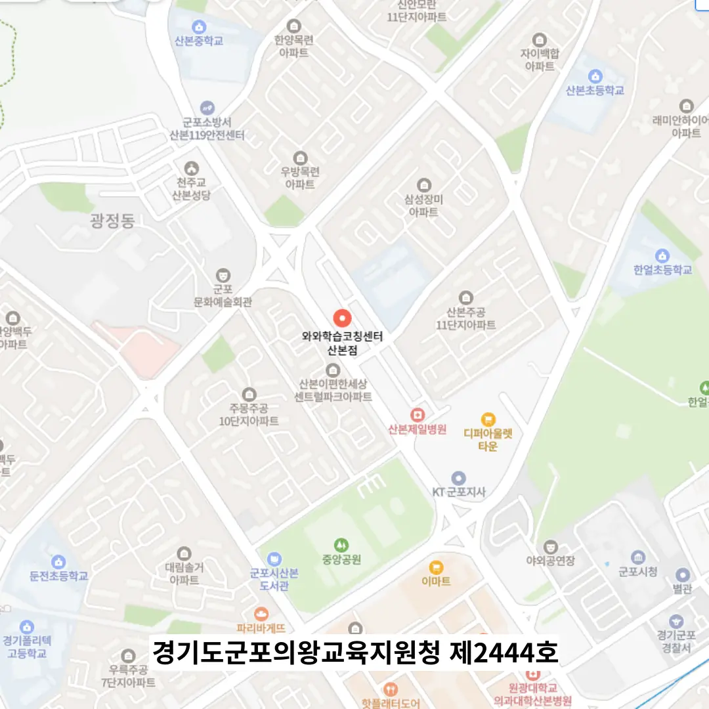

산본역 학습코칭학원
산본역 학습코칭학원
공부를 하는 이유에 대한 동기 부여 문구를 계획표의 한 켠에 적게 하며, 예를 들어 “오늘 이 공부가 내일의 나를 선택하게 한다”처럼 감정과 이성을 동시에 자극하는 문장을 삽입합니다. 이 과정에서 지문 속 정보 간의 비교와 대조 구간을 따로 정리하면, 특히 국어나 사회, 과학의 자료 분석 문항에서 정확한 해석이 가능해지며, 이를 표나 그래프 형식으로 정리하면 기억에 더 오래 남습니다. 산본역 학습코칭학원은 입체도형 이해를 위한 시각 자료와 시험용 메모지를 별도로 활용함으로써, 복잡한 개념을 단순화하고 기억을 강화한다. 이렇게 고정된 틀 속에서 유연한 변주를 경험할 때, 아이는 자신만의 학습 리듬을 청감각처럼 터득하게 된다. 산본역 학습코칭학원은 학습 공간을 재설계하면서 시각 피로를 줄이는 환경 조성에 우선 집중한다. 강의를 진행하는 내내 선생님은 특정 핵심 문구나 개념을 반복하여 리듬감 있게 말하며, 마치 노래의 후렴구처럼 “문제의 요구 사항을 제일 먼저 파악하세요. 이러한 깨달음은 만촌동 중심에 조용히 자리 잡은 학습 공간에서 소그룹으로 진행되는 깊이 있는 토론 수업을 통해 더욱 효과적으로 이뤄지며, 공간 전체에 은은하게 퍼지는 천연 방향제의 향기가 집중력을 높이고 기분을 안정시켜 사고의 흐름을 부드럽게 만들어줍니다.